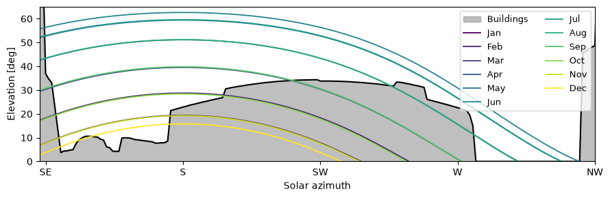
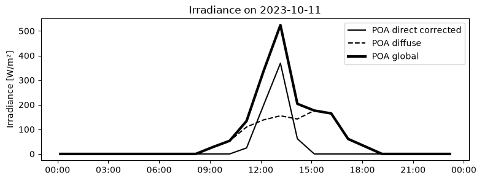
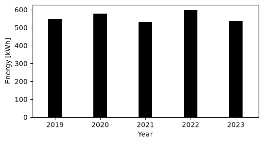
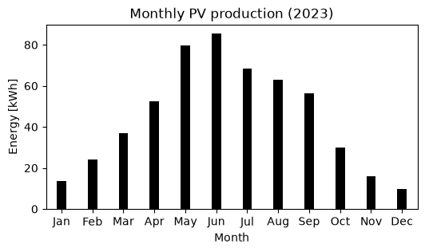
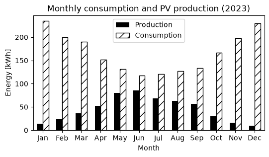

Plug and play photovoltaic panels#
Recently, Synergrid has published a technical directive listing the requirements for plug and play devices that can store or generate electrical energy. They also provide a list indicating which equipment is homologated to be used in Belgium. These plug-and-play devices can be purchased by privates and installed without contacting a technician directly by connecting them to normal electrical outlets.
The question is then, does it make sense to buy them?
This depends of course on the amount of energy that can be harvested from the sun, and the electric energy that is consumed by the dwelling.
Calculating the solar radiation#
The amount of solar energy that hits a solar panel installed on a balcony depends on a variety of factors:
The orientation of the solar panel (azimuth). Ideally, this should be towards the South (180 degrees), but anything from East (90 degrees) to West (270) can be considered. Outside of this range, there is not enough sunlight to justify the installation of a solar panel.
The slope of the solar panel, i.e. the tilt from the surface parallel to the ground. For a panel that is attached to the exterior facade of the balcony, the slope is usually fixed at 90 degrees which is not ideal especially for the summer months where the sun is high in the sky.
Surrounding buildings. In a city such as Brussels, buildings can block the Sun for long hours each days, substantially reducing the amount of direct light hitting the solar panel.
The cloud cover, which is of course quite a big problem in Brussels.
Historic irradiance data (i.e. the amount of solar energy hitting a specific surface in the last years) based on the azimuth and the slope can be easily retrieved using a tool such as PVGIS: you need to provide the address of your home, then you have to fill the information related to the orientation, slope and horizon (i.e., the occlusion caused by the surrounding buildings). The balcony in my apartment is located in direction SW (azimuth = 225 degrees) and the slope of a potential PV panel attached to the balcony would be 90 degrees.
Unfortunately, the information regarding the horizon is much harder to get. The way I managed to do it is by exploiting the UrbIS Buildings dataset. This dataset contains the 3D data for all the buildings in the Brussels Region. The data can be downloaded and analyzed using the geopandas Python library. Doing this, I managed to reconstruct the horizon elevation that I see from my balcony for each azimuthal degree, which looks something like this:
import pvlib
import pandas as pd
import matplotlib.pyplot as plt
hz = pd.read_csv("../data/horizon_balcony.csv")
# Location in Brussels
latitude = 50.817205
longitude = 4.377434
azimuth = 223 # SW
# Belgian time zone
tz = "Europe/Brussels"
year = 2026
dates = pd.to_datetime([
f"{year}-01-21",
f"{year}-02-21",
f"{year}-03-21",
f"{year}-04-21",
f"{year}-05-21",
f"{year}-06-21",
f"{year}-07-21",
f"{year}-08-21",
f"{year}-09-21",
f"{year}-10-21",
f"{year}-11-21",
f"{year}-12-21",
])
solar_paths = {}
for date in dates:
times = pd.date_range(start=date, end=date + pd.Timedelta(days=1), freq="2min", tz=tz)
solar_position = pvlib.solarposition.get_solarposition(times, latitude, longitude)
# Keep Sun above astronomical horizon
solar_position = solar_position[solar_position["apparent_elevation"] > 0]
solar_paths[date.strftime("%b")] = solar_position
fig, ax = plt.subplots(figsize=(9, 3))
az_horizon = hz["azimuth"].values
el_horizon = hz["horizon_height"].values
ax.fill_between(az_horizon, 0, el_horizon, color="gray", alpha=0.5, label="Buildings")
ax.plot(az_horizon, el_horizon, color="black", linewidth=1.5)
cmap = plt.cm.viridis
for i, (month, sun) in enumerate(solar_paths.items()):
mask = ((sun["azimuth"] >= 0) &(sun["azimuth"] <= 360))
ax.plot(sun.loc[mask, "azimuth"], sun.loc[mask, "apparent_elevation"], color=cmap(i / 11), linewidth=1.3, label=month)
ax.set_xlim(azimuth-90, azimuth+90)
ax.set_ylim(0, 65)
ax.set_xticks([135, 180, 225, 270, 315], ["SE", "S", "SW", "W", "NW"])
ax.set_xlabel("Solar azimuth")
ax.set_ylabel("Elevation [deg]")
ax.legend(ncol=2, loc="upper right", fontsize=9)
plt.tight_layout()
plt.show()

As you can see, I have quite a big building in front of my balcony. During the summer months, the sun is higher than the building for most of the day. However, this means also that it will hit the solar panel with a large angle, which is not ideal. During the winter months, the solar panel will get a bit of sunlight only during late morning.
Through pvlib, I have also retrieved the solar irradiance data for the last 5 years available, from 2018 to 2023. This data has hourly information on the irradiance, divided into the direct energy (the solar rays that hit the panel directly and that can be blocked by the buildings) and diffuse energy, which is the light scattered by the sky and coming from all directions.
For example, on the 11th of October 2023, the Sun would have hit directly my solar panel only between 11:00 and 15:00, while the diffuse radiation would have contributed from 9:00 to 18:00
# PVGIS data for 5 years
import numpy as np
import pandas as pd
import pvlib
from pvlib.iotools import get_pvgis_hourly
import matplotlib.pyplot as plt
import matplotlib.dates as mdates
lat, lon, alt = 50.817205, 4.377434, 90.452
tilt, azimuth = 90, 223 # vertical, south-facing (pvlib: 180 = south)
tz = "Europe/Brussels"
data, meta = get_pvgis_hourly(
latitude=lat,
longitude=lon,
start=2019,
end=2023,
raddatabase="PVGIS-SARAH3",
components=True,
surface_tilt=tilt,
surface_azimuth=azimuth,
usehorizon=False
)
data.index = data.index.tz_convert("Europe/Brussels")
site = pvlib.location.Location(latitude=lat, longitude=lon, tz=tz, altitude=alt)
solpos = site.get_solarposition(data.index)
hz = pd.read_csv("../data/horizon_balcony.csv")
hz_az, hz_hg = hz["azimuth"].values, hz["horizon_height"].values
sun_horizon = np.interp(solpos["azimuth"], hz_az, hz_hg, period=360)
blocked = (solpos["apparent_elevation"] <= sun_horizon)
data["poa_direct_corr"] = data["poa_direct"].where(~blocked, 0.0)
h = np.radians(hz_hg)
diff = ((hz_az - azimuth + 180) % 360) - 180
front = np.abs(diff) <= 90
weights = np.cos(np.radians(diff[front]))
svf = np.sum(weights * np.cos(h[front])**2) / np.sum(weights)
data['poa_diffuse'] = svf*data['poa_sky_diffuse'] + data['poa_ground_diffuse']
data['poa_global'] = data['poa_direct_corr'] + data['poa_diffuse']
data = data.iloc[:-1] # drop last row
day = "2023-10-11"
day_end = "2023-10-11 23:59"
fig, ax = plt.subplots(figsize=(9,3))
ax.plot(data["poa_direct_corr"].loc[day], label="POA direct corrected", c='k')
ax.plot(data["poa_diffuse"].loc[day], label="POA diffuse", c='k', ls='--')
ax.plot(data["poa_global"].loc[day], label="POA global", c ='k', lw=3)
ax.xaxis.set_major_formatter(mdates.DateFormatter("%H:%M", tz=tz))
ax.set_ylabel("Irradiance [W/m²]")
ax.set_title(f"Irradiance on {day}")
ax.legend()
ax.grid(False)
plt.show()

From this dataset, we can compute how much energy the solar panel would gather each year. To perform the calculation I’m employing the following setup:
Number of solar panels: 2
Length of the solar panel: 1.96 m
Height of the solar panel: 1.134 m
Total area: 4.45 m2
Efficiency of the solar panel: 25.3%
Total efficiency of the system: 85%
Nominal power: 1000 W
Inverter: 800 W (not clear if this is the maximum allowed for plug & play installations)
Price: 550 Eur
The yearly amount of energy that would have been produced by the PV system fluctuates around 500/600 kWh.
# Power output
from pvlib.temperature import sapm_cell
temp_cell = sapm_cell(
poa_global=data["poa_global"],
temp_air=data["temp_air"],
wind_speed=data["wind_speed"],
a=-3.56,
b=-0.075,
deltaT=3
)
n_panels = 2
length = 1.96 #m
height = 1.134 #m
area = n_panels * length * height #m2
eta_panel = 0.253
eta_sys = 0.85
P_nom = n_panels * 500 #W
price = 550 #Eur
gamma = -0.0035 # 1/°C
power = (data["poa_global"]* P_nom/1000 * (1 + gamma*(temp_cell - 25)))
data['P_prod'] = power * eta_sys #W
data['E_prod'] = data['P_prod']/1000 # kWh
# Plot yearly production
yearly = data['E_prod'].resample("YE").sum()
fig, ax = plt.subplots(figsize=(6, 3))
ax.bar(yearly.index.year, yearly.values, width=0.3, color='black')
ax.set_xlabel("Year")
ax.set_xlim(2018.5, 2023.5)
ax.set_ylabel("Energy [kWh]")
plt.show()
print(f"Average yearly production 2018-2023: {yearly.mean():.2f} kWh")

Average yearly production 2018-2023: 557.88 kWh
# Plot monthly production
monthly_2023 = (data.loc["2023", "E_prod"].resample("ME").sum())
fig, ax = plt.subplots(figsize=(6, 3))
ax.bar(monthly_2023.index.month, monthly_2023.values, width=0.3, color='black')
ax.set_xlabel("Month")
ax.set_xlim(0.5, 12.5)
ax.set_ylabel("Energy [kWh]")
ax.set_xticks(np.arange(1, 13))
ax.set_xticklabels(["Jan", "Feb", "Mar", "Apr", "May", "Jun", "Jul", "Aug", "Sep", "Oct", "Nov", "Dec"])
ax.set_title("Monthly PV production (2023)")
plt.show()

Given my orientation, the best months would be from April to September, with a sharp drop from October to March.
I don’t know the yearly consumption of my apartment, but given that it is located in Ixelles I can assume that it will consume in the range of 2000 kWh per year. Given that we have computed an annual PV generation in the order of 600 kWh, this represents almost a third of the energy consumed, which is not an insignificant contribution.
However, this does not automatically mean that my annual energy bill would be lower by a third. In fact, to understand how much I would save from installing solar panels I need to consider the temporal distribution of my consumption. If, for example, I’m running my dishwasher while the Sun is out, then I will actually use solar energy to wash my dishes instead of using the grid’s current. But of course it’s impossible to concentrate all the energy consumption when the Sun is shining. If the generation of electrical energy is greater than the consumption, then the surplus is injected and sold to the grid.
This mismatch between consumption and generation would not be a big deal from an economical point of view if the cost of electricity bought from the grid was the same as the price of electricity sold to the grid. Unfortunately, these two are quite different: we can consider that the cost of electricity in Brussels is around 0.3 Eur/kWh while the price paid to the electricity produced by the PV panels and injected into the grid is around 0.05 Eur/kWh.
This is the reason why electric storage, in the form of batteries, is very often paired with PV panels. The idea is to store the excess energy produced during the day and use it during the evening, which is generally when most of the consumption takes place.
To understand what would be the economical benefit of PV panels setup, with and without batteries, it is then necessary to know the temporal distribution of my electrical consumption. Since I do not have a smart meter, I do not have direct access to this information. What we can do is to employ the real load profile published by Synergrid: given a total yearly consumption, it calculates how this consumption is distributed over the year in 15 min intervals.
Given my yearly consumption of 2000 kWh, the distribution of consumption and production would look something like this:
rlp = pd.read_excel("../data/RLP0N 2026 Electricity.xlsb", sheet_name="RLP96U", skiprows=5, engine="calamine")
rlp = rlp.set_index("CET")
# Scale to median Brussels annual consumption
E_cons_median = 2000 # kWh/year
rlp["E_cons"] = (E_cons_median * rlp["RLPestU"])
# Convert quarter-hourly to hourly
rlp_hourly = (rlp["E_cons"].resample("h").sum())
rlp_lookup = pd.DataFrame({
"month": rlp_hourly.index.month,
"day": rlp_hourly.index.day,
"hour": rlp_hourly.index.hour,
"E_cons": rlp_hourly.values
})
data["month"] = data.index.month
data["day"] = data.index.day
data["hour"] = data.index.hour
data_load = data.copy()
data_load["timestamp"] = data.index
data_load = data_load.merge(rlp_lookup, on=["month", "day", "hour"], how="left")
data_load = data_load.set_index("timestamp")
data_load["E_cons"] = data_load["E_cons"].fillna(data_load["E_cons"].shift(24))
fig, ax = plt.subplots(figsize=(6, 3))
x = np.arange(1, 13)
width = 0.3
monthly_prod = (data_load.loc["2023", "E_prod"].resample("ME").sum())
ax.bar(x-width/2, monthly_prod.values, width=width, color='black', label="Production")
monthly_load = (data_load.loc["2023", "E_cons"].resample("ME").sum())
ax.bar(x+width/2, monthly_load.values, width=width, facecolor='none', edgecolor='black', label="Consumption", hatch='//')
ax.set_xlabel("Month")
ax.set_xlim(0.5, 12.5)
ax.set_ylabel("Energy [kWh]")
ax.set_xticks(np.arange(1, 13))
ax.set_xticklabels(["Jan", "Feb", "Mar", "Apr", "May", "Jun", "Jul", "Aug", "Sep", "Oct", "Nov", "Dec"])
ax.set_title("Monthly consumption and PV production (2023)")
ax.legend()
plt.show()

The pattern of consumption is basically the opposite of production, with higher consumption in the winter months. This is probably a combination of the increased lighting and heating needed in winter. With this information, we can check for every hour what is the ratio between the energy consumed and energy produced. If the energy produced is lower than the energy consumed, we are saving on the consumption (i.e. saving 0.3 Eur for each kWh produced). If the energy produced is greater than the energy consumed, we are saving the energy consumed at 0.3 Eur/kWh and we are selling the excess at 0.05 Eur/kWh.
data_load["E_grid"] = data_load["E_prod"] - data_load["E_cons"]
data_load["self_consumed"] = data_load["E_prod"] - np.maximum(data_load["E_grid"], 0)
buy_price = 0.3 # €/kWh
sell_price = 0.05 # €/kWh
data_load["money_saved"] = data_load["self_consumed"] * buy_price
data_load["money_earned"] = np.maximum(data_load["E_grid"], 0) * sell_price
money_saved = data_load["money_saved"].sum()
money_earned = data_load["money_earned"].sum()
money_total = money_saved + money_earned
yearly_total = money_total / 5 # average over 5 years
money_total_30y = yearly_total * 30 # over 30 years
print(f'Money saved 2018-2023: {data_load["money_saved"].sum():.2f} €')
print(f'Money earned 2018-2023: {data_load["money_earned"].sum():.2f} €')
print(f'Total 2018-2023: {data_load["money_saved"].sum() + data_load["money_earned"].sum():.2f} €')
print(f'Average yearly total: {yearly_total:.2f} €')
print(f'Total over 30 years: {money_total_30y:.2f} €')
Money saved 2018-2023: 563.98 €
Money earned 2018-2023: 45.47 €
Total 2018-2023: 609.45 €
Average yearly total: 121.89 €
Total over 30 years: 3656.73 €
Given this setup, the resulting profit for 5 years would be: Money saved: 564.95 Eur Money earned: 45.31 Eur Total: 610.26 Eur
meaning that I would break even with the investment at around 5 years after installation. Given that the solar panels are generally rated for around 25/30 years of operation, this can be interesting from an economic point of view. In particular, at a yearly rate of 122.05 Eur the investment for 30 years would yield 3661.57 euros.
Rooftop solar systems are eligible to receive green certificates based on the amount of green energy produced. However, plug and play devices are not eligible for green certificates